決まれば、契約書を仕上げて送れます
押すと「済」。下の欄に決まったことを書きます。スマホとパソコンで同じ内容になります。
23日の流れ10:30 五島シティモール・1時間20分ほど。上から順に、聞いて □ を押し、決まったことを欄に書くだけ
- iPhone（充電100%）とモバイルバッテリー：見本のHPとこの帳面を見せます
- マイナンバーカード（無ければ、通知カード＋運転免許証）：7で見せるだけ（預けない）
- 名刺
- 渡す物：チラシの「ご案内」4枚（2部）・投稿の箱の使い方（2部）・投稿の箱の専用アドレス（別の紙1枚。資料には書かない）。間に合わない物は「○日までにメールでお送りします」
- 契約書 第13稿をスマホで開けるように（デスクトップの「副業\プレッジ様」の PDF を、前の日に自分あての LINE などへ）：「聞かれたら」で条文を一緒に見る時に
前の晩済：21・22日の写真・チラシ・メニュー・社長様のお答えを見本に入れた
- 11/22 夜に済：写真・チラシ3枚・まる福のメニュー4枚・1年の催事・Leonの電話・各店の公式ページ（11店）・社長様のお答えを入れた。島内の客・観光客・外国の客・デザイナーの4つの目で採点し、80点以上になるまで直した
- 23日の朝、見本のHPを一度開いて、写真が出ているか見る
- 電波のない所でも開けるように：22日の夜か23日の朝、当日使う iPhone の Safari でこの帳面を開き、いちばん上に「✓ 電波なしでも開けます」と出るまで1分ほど待つ。LINE の中で開いた時は、画面の印から「Safari で開く」を選んでから（LINE の中では保存されません）。これで帳面・予習・見本のHP・投稿の箱とチラシの見本が、電波なしでも開けます（地図の埋め込みだけは出ません）
1. ごあいさつ・撮影のお礼2分
進め方言うこと・見せる物
- 「先日は撮影にお付き合いいただき、ありがとうございました。今日は、その写真を入れた見本をお見せして、契約書の空いている所を一緒に決めさせてください。1時間20分ほどいただきます。撮り足しが残っていれば、そのあと15分ほど館内を回らせてください」
2. 写真の入った見本のHPを見せて決める13分
進め方言うこと・見せる物
- 「見本のHPを開く」を押して、スマホを吉田様に渡す。トップから下へ、ゆっくりめくってもらう
- 新しくなった所を、この順に指さす（各30秒）：①トップの営業時間の帯に電話 ②お店のチラシを押すと大きく開いてめくれる ③お店をさがす：「いま営業中」、スマホでは種類ごとに3店＋「残り○店を見る」 ④館内図の「全体を見る」 ⑤お知らせ：1年の催事のめやす ⑥言葉を English に ⑦お店の写真（35店・163枚）と、アクセスのバスのりばの写真
- 見せ終わったら、下の項目を上から順に聞く。決まったら □ を押して、欄に一言
- その場で直せない所は「持ち帰って直します」で大丈夫
3. 契約書の空いている所・アカウント20分
進め方言うこと・見せる物
- 「これが決まれば、契約書を仕上げてメールでお送りします」と言ってから始める
- 下の項目を上から順に。前半が契約書の空欄、後半が公開の日を左右するアカウント（吉田様の画面で一緒に見られる所は、その場で見る）
- 分からない所は「確かめて、LINEでお返事します」。その場で約束しない
4. 外から受ける2つの入口（投稿の箱・お店のチラシ）15分
進め方言うこと・見せる物
- 「ホームページと Instagram に、外から物を受け取る入口が2つあります。どちらも、吉田様が押すまで外には出ません」と先に言う
- ①投稿の箱（Instagram 用）：見本の画面で「吉田様が箱に入れる→ひなが堂が下書き→吉田様が✓→ひなが堂が出す」の4つだけ
- ②お店のチラシ：見本の画面で「お店が送る→吉田様が『載せる』→期間のあいだだけ出る」。ツーピース様の広告の形も
- 資料を2つ渡す：チラシの「ご案内」（4枚）と投稿の箱の使い方。「ご案内の1枚目の合意の文を、契約書に同意いただいた後に、社長様からメールで返信してください」と頼む
5. 現在地QRを貼る場所（11か所まで）7分
進め方言うこと・見せる物
- 下の図を見せて、「11か所まで、料金の中でお作りします。貼りたい所の番号を教えてください」
- 吉田様が言った番号を押すと緑になります。迷う所は番号をメモして、11:50 に館内を回るときに見に行く
- 見本のポスターと、読み取ったときのスマホの画面は「進め方」の下の絵で見せられます

上限は11か所（11/23 大久保）。図は押すと大きく開きます。番号のほかに貼りたい場所があれば、下の項目のメモ欄に。
6. お店・館内・ポスター12分
進め方言うこと・見せる物
- 下の項目を上から順に。お店の名前・ATM・休憩所・ドコモ・まだの素材・ポスター・はじめの9投稿・催事の表の担当
7. マイナンバーをお見せする3分
進め方言うこと・見せる物
- 先に聞く：「支払調書のためのマイナンバーです。どなたが受け取られますか。写しは要りますか」。受け取る担当の方に、番号の面だけ見せる
- 大久保のスマホでは撮らない・送らない。カードは預けず、写し終わったら受け取って帰る
8. まだの素材を読み上げ・まとめ8分
進め方言うこと・見せる物
- 下の「まだいただいていない素材」を期日の順に読み上げる。「今日決まった物は消して、残りを帰ってからLINEでもお送りします」
- 灰色の「後で表・LINEで」は、「後で表（またはLINE）でお願いします」と一言だけ
- いちばん下の「書いた内容をコピー」を押し、決まった所を読み上げて確かめる
- 「社長様のお名前が確かめられしだい、24日か25日に契約書をメールでお送りします。今日決めた日程で、12月10日ごろの公開を目指します。契約書の上では12月中を目標にして、遅れたときの余裕にしておきます」。お礼を言って終わり
- 帰ったらやること：① コピーした内容を Claude に貼る（契約書を仕上げます） ② お支払い・免税の表を送ると約束したら、Claude に「表を作って」 ③ 撮り足しの日を相談 ④ 同期の合言葉は23日のあとに Claude が作り直す
| 期日 | いただく物 | どなたから |
|---|---|---|
| 23日その場 | 社長のお名前・肩書（登記のとおり）／Instagram のアカウント名・種類と Facebook ページのつながり（画面で）／Googleマップの持ち主／たこ焼き けんちゃんの Instagram の名前／BLOSSOM・ファンタジーランドの Instagram をお店のページにつないでよいか | 吉田様 |
| 11/30 | 社長のごあいさつ文（300〜400字）／御社の名義の Google アカウントと公開先のメール・予備の管理者 | 社長様・吉田様 |
| 12/3 | 独自ドメインを取るなら、その申し込み（御社の名義・カード） | 御社 |
| 12/5 | お店の素材（下の表）／釣りします 不動産の素材一式（工事のあと）／ドコモショップの LINE・Facebook の QR／見本のHPの「直してほしい所」 | 吉田様（お店から集めて） |
| 12/5 | 観光の方むけ：コインロッカー・無料Wi-Fi・喫煙所・授乳室・トイレの階と場所／バス（港⇔モール）の所要時間と運賃／飲食5店の代表のメニューと値段／タクシーのりばの場所（写真はひなが堂が撮る） | 吉田様 |
| 12/○（今日決める） | Instagram の管理の権限（パスワードは受け取らない）／Googleマップの管理者に入れていただく | 吉田様 |
| 12/10まで | チラシの仕組みの「許可」の操作（御社のアカウントで1回だけ） | 決めた方 |
| 毎月 | リトル・クルサのチラシのデータ（前の月の27・28日）／4店の新商品ポップの写真 | 吉田様 |
| 後で表・LINE | お店ごとのお支払い・免税／港・空港までの目安の時間／投稿の曜日／ポイント・宅配・Wi-Fi・両替／毎月の報告の送り先／チラシを使うお店の数 | 吉田様 |
| 足りない物 | お店 |
|---|---|
| ロゴ | はたなか・小麦の奴隷・多津屋 Hanako・Leon・VITA・恵・携帯相談室・リトルシアター・釣りします 不動産・白寿ヘルストロン（無ければ店名の文字で載せる）。ドコモは載せない約束 |
| 電話 | 小麦の奴隷・たこ焼き けんちゃん・麺屋まる福・ピーパラダイス・ダイソー・VITA・未来ごとう・たびのコンパス・シティハウス・ファンタジーランド・SpRay・リトルシアター・釣りします 不動産・コインランドリー・白寿ヘルストロン・パレット HOMME（載せない店は「載せない」と一言） |
| 営業時間 | VITA・ドコモショップ（日によって違う）・釣りします 不動産 |
| 定休日 | 釣りします 不動産・コインランドリー |
| 写真 | 釣りします 不動産（工事のあと）。ATM は続くか決まってから |
| 紹介の一言 | 全店（お店のカードに出す1〜2行。無ければ、こちらで書いて確かめていただく） |
9. 撮り足し21日の★が残っていれば・15分
11:50撮り足し
- 「撮影」タブの「当日の回り方」で、★の □ が空いている行だけ撮る（社長のお写真が残っていれば、それを先に）。タクシーのりばも1枚
- 吉田様のお時間をいただかなくても撮れる物（外・通路）は、ひとりで撮ってよいか聞いてから
11月21日（土）13:30〜16:00 写真の撮影
このページを上から順に。前の日 → はじめに → 当日の回り方。見本の写真は下の A〜E にあります。
↑ 上のボタンは、指で横にずらすと続きがあります
写さない物
- お客さん・店員さん（吉田様のご希望。後ろ姿が小さく入ってよいかは、13:30に確かめる）
- 子ども（託児所・ゲームセンターは特に）
- 車のナンバー
- ATM・レジの画面、伝票や名前の書いた紙
- キャラクター商品・ほかの会社のポスターだけを大きく
押す回数の決まり（全部これ）
- 横 スマホを横にして 3回 押す
- 縦 スマホを縦にして 2回 押す
- 寄り 近づいて大きく、横で 3回
「横」「縦」の両方が付いた物は、横3回＋縦2回。社長とポスター用だけは多めに（その項目に書いてあります）。
前の日に家で試す4つ全部で15分。上から順に。うまくいったら、いちばん下の □ を押す
iPhone 17e の実際の画面は、Claude はまだ見ていません。前の日に一度さわっておけば、当日に画面の前で迷いません。書いてある通りに出ない所があっても失敗ではありません。それが分かることが目的です。
つまずいたら：その画面の写真（スクリーンショット）を Claude へ- 右側の横長のボタンと、左側の音量の上のボタンを、同時に押してすぐ離す
- 「カシャ」と鳴り、左下に小さな絵が出れば撮れています（写真のアプリに入ります）
- その画像を Claude に送り、「ここで止まった」とひとこと
試す1打ち合わせ帳をホーム画面に置く（3分）
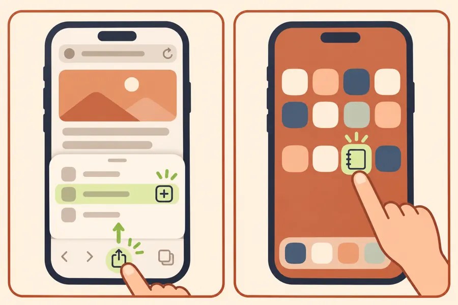
- このページを Safari（青い方位磁石の印のアプリ）で開く。LINE のリンクから開くと LINE の中で開くことがあります。その時は画面の右上か右下の「…」などを押し、「Safariで開く」を選ぶ
- 画面のいちばん下の、四角から上に矢印が出た印（共有）を押す。見当たらなければ、下の「…」を押すと出てきます
- 出てきた一覧を下へずらし、「ホーム画面に追加」→ 右上の「追加」
- ホーム画面に、薄い緑の印が1つ増えます。それを押して、このページが開くか見る
- 開いたら、この下の □ を押す → 一度アプリを閉じ（画面の下から上へなでる）、ホーム画面の印からもう一度開く
- できた：開き直しても □ に✓が残っている（印が保存されている）
- ✓が消えていたら、その画面のスクリーンショットを Claude へ。当日は紙に✓でも大丈夫です

試す2ポートレートモードを出してみる（4分）
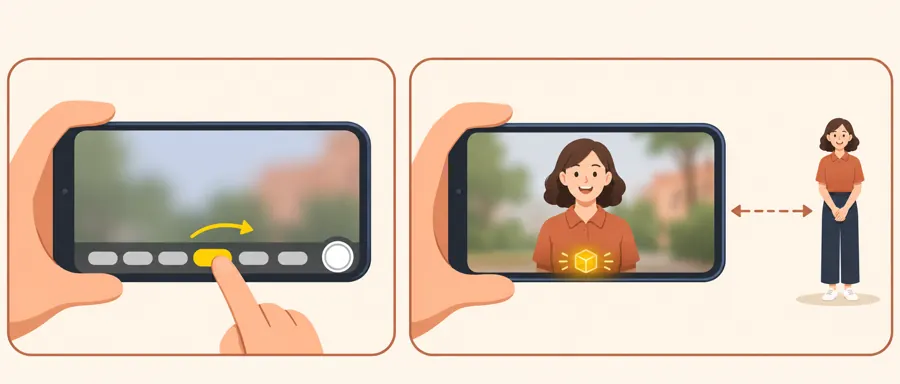
- ご家族に、壁から1mほど離れて立ってもらう（いなければ、明るい窓の近くに置いたぬいぐるみで試す）
- カメラを開く。シャッター（白い丸）の近くに「シネマティック・ビデオ・写真・ポートレート・パノラマ」のように文字が並んでいます。今は「写真」が黄色
- その文字の列を、指で横に1回なでる。「ポートレート」が黄色になればOK（「パノラマ」や「ビデオ」になったら、反対の向きになでて戻す）
- 2mほど離れて、スマホを相手の胸の高さに。画面の下に「自然光」という文字が出て、黄色になったら準備OK
- 画面に「離れてください」と出たら1歩下がる。「もっと光が必要です」と出たら明るい所へ
- 画面の顔を軽く押してから、シャッターを「トン」
- 左下の小さな写真を押して見る。左上に「ポートレート」と出ていて、人はくっきり、後ろがぼけていれば成功
- できた：ポートレートで1枚撮れた（Claude に「ポートレートあった」とひとこと）
- 「ポートレート」の文字が無い・ぬいぐるみでは「自然光」が黄色にならない場合 → 人で試す。それでも無ければ、当日は「写真」のまま撮れば十分です（後ろのぼかしはこちらで足せます）。Claude に「ポートレートなかった」と伝える

試す3Google ドライブに試しに送る（5分）
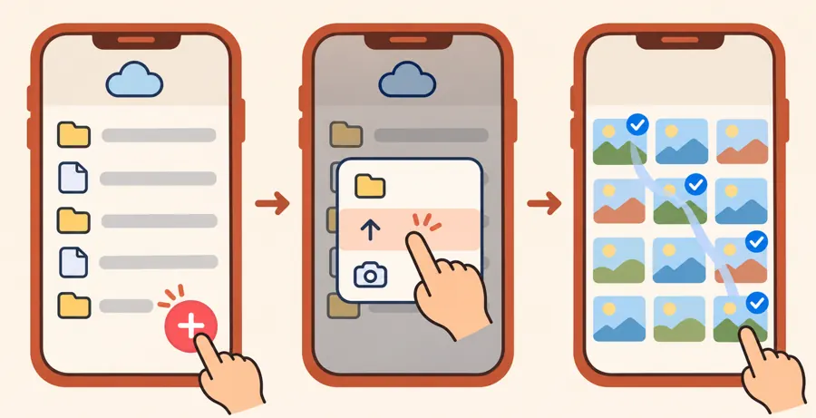
- 先に、家の中を2〜3枚撮っておく（何でもよい）
- Google ドライブのアプリを開く。右上の丸い顔の印を押し、ひなが堂のアカウントになっているか見る（違えば、出てきた一覧から選び直す）
- 右下の色つきの「＋」→「フォルダ」→ 名前に「1121さつえい」と入れて「作成」。できたフォルダを押して開く（当日の夜は、ここに送るだけになります）
- フォルダの中で、もう一度「＋」→「アップロード」→「写真とビデオ」
- 「写真へのアクセス」を聞かれたら「フルアクセスを許可」
- 写真の一覧が出たら、まず1枚を押す（青い丸に✓が付く）
- まとめて選ぶ練習：次の写真の上に指を置き、指を離さずに横や下へすべらせる。指が通った写真に✓が付けばできています。付かなければ、1枚ずつ押せば大丈夫（夜に少し時間がかかるだけ）
- 右上の「アップロード」（「追加」の時もあります）を押す
- フォルダ「1121さつえい」の中に、写真が並べば成功。下に進み具合が出ている間は、アプリを閉じない
- できた：フォルダに写真が入った（Claude に「試しに送れた。まとめて選ぶは できた／できなかった」）
- 試しに送った写真は消さなくて大丈夫です。当日の写真と区別できます

試す4家の中で5枚撮って、見直す（3分）
- 窓を背中にして、棚やドアに向けてスマホを構える（「はじめに」の1のとおり両手で）
- 画面に縦横の白い線（グリッド）が出ているか見る。出ていなければ「前の日」の設定をもう一度
- スマホを横にして、真ん中の短い線が黄色になったら「トン」。3回
- スマホを縦にして、2回。これで「押す回数の決まり」の練習になります
- 左下の小さな写真を押し、2本の指で広げて大きくし、ぶれていないか見る（下の「写真の見直し方」と同じ）
- わざとシャッターを2秒ほど押し続けてみる → 写真の一覧で、その1枚の右下に「0:02」のような時間が出ます。これが「動画になった」印。当日これを見たら、撮り直すだけです
- できた：傾かずに撮れて、動画になった時の見分け方が分かった
はじめに：撮り方の基本7つ前の日と当日の朝に読む（5分）
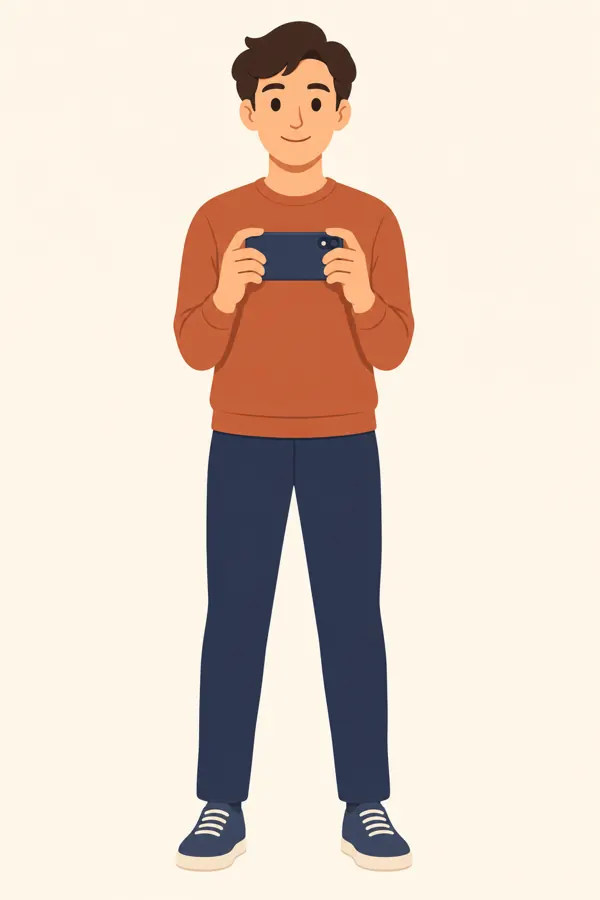
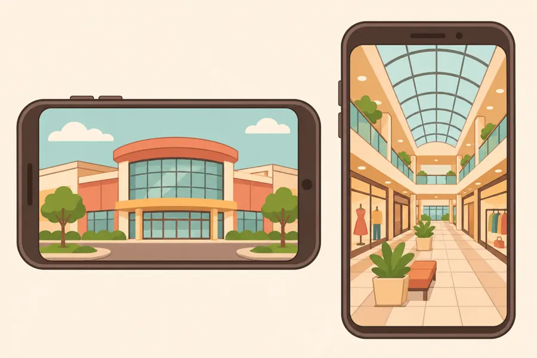
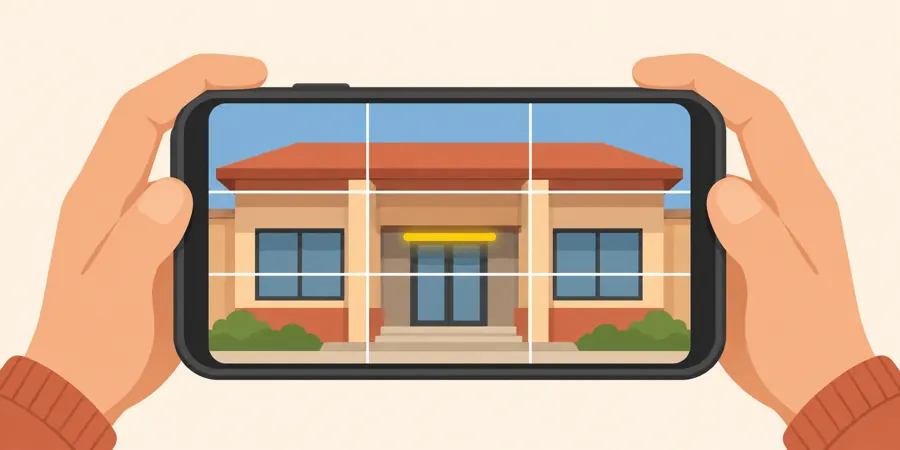
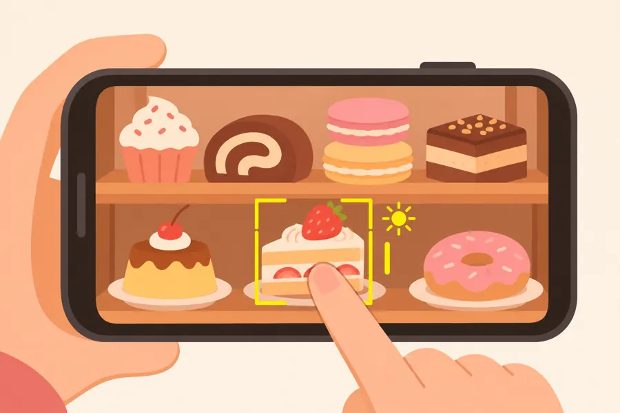
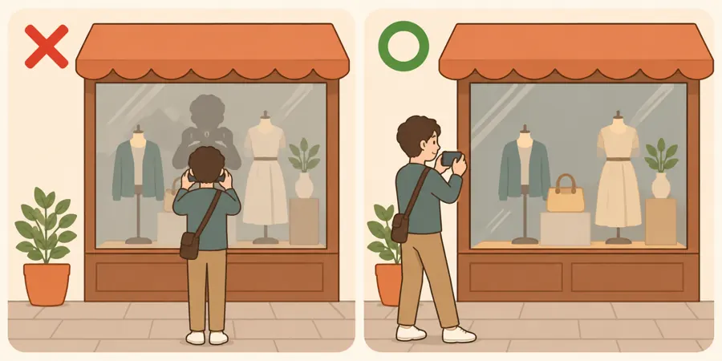
シャッターの近くにある小さな丸いボタン（1× / 2×）を押して切り替えます。指で広げて拡大すると画質が落ちるので、撮るときは使いません。遠い物は自分が近づく。入りきらない物は自分が下がる（17e には 0.5× がありません）。
撮った写真を確かめるときは、反対に指で広げて大きくして見ます（下の「失敗例」）。
よくある失敗と、直し方区切りごと（外が終わった時・1階が終わった時…）に見直す。写真はAIの見本
- カメラの画面の左下の、小さな四角（今撮った写真）を押す
- 指を左右に払って、今の区切りで撮った写真を見ていく
- 大事な物（★）は、2本の指で広げて大きくし、ぶれ・顔・指の写り込みが無いか見る
- 下の8つのどれかなら、その場でもう1回撮る。良い写真は消さなくてよい
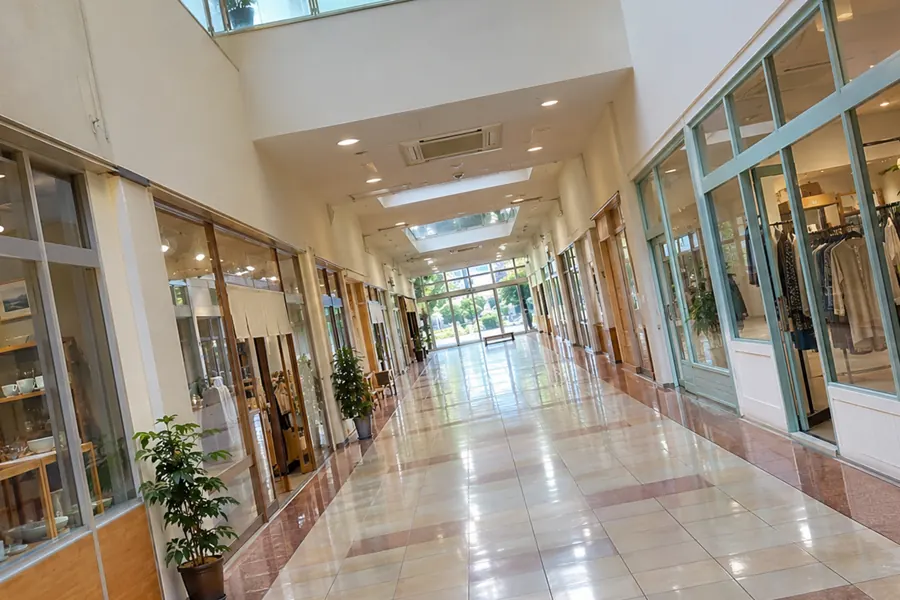
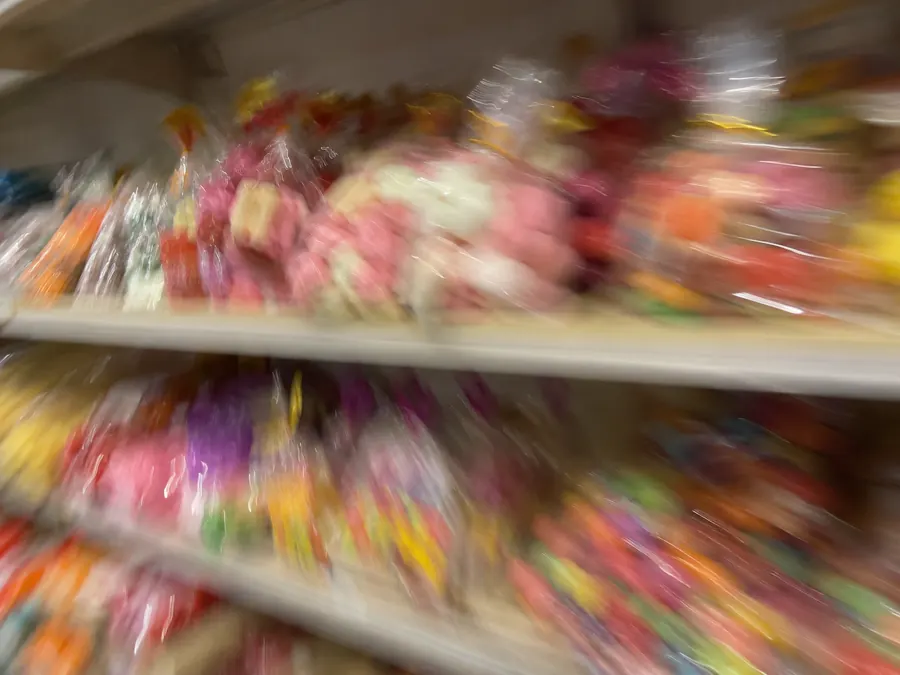
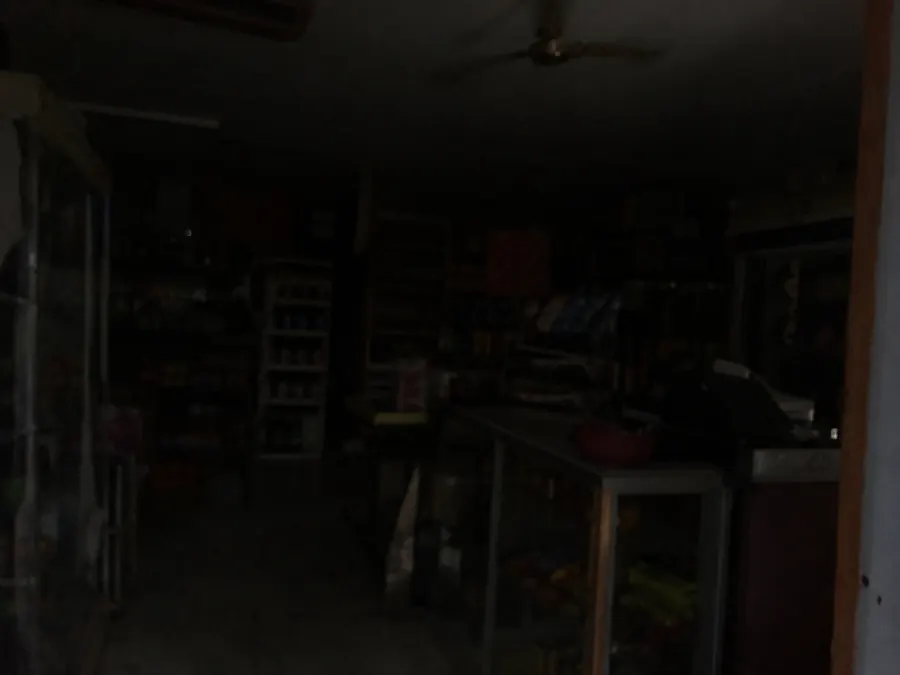
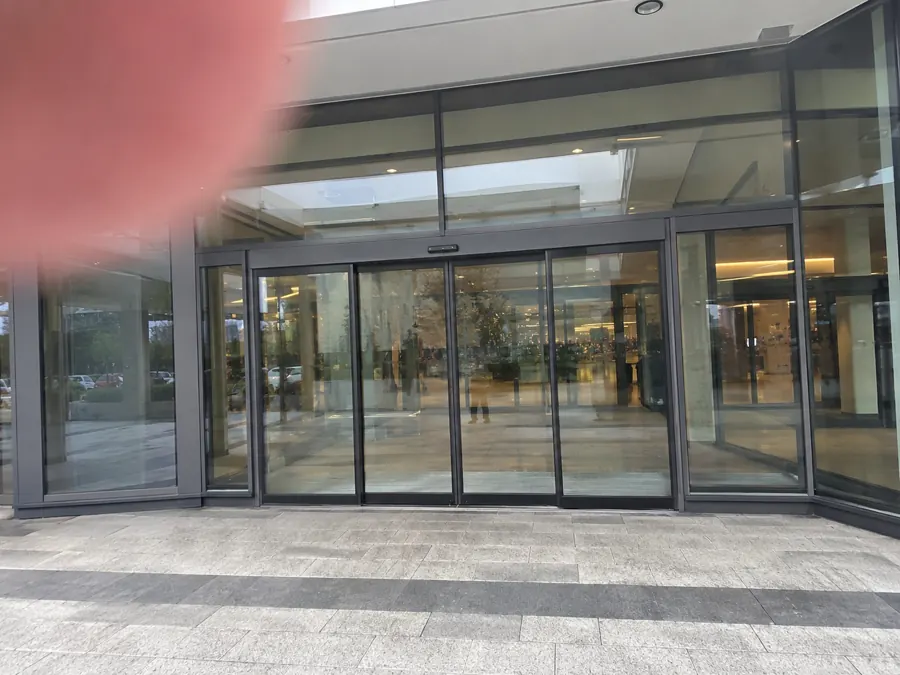
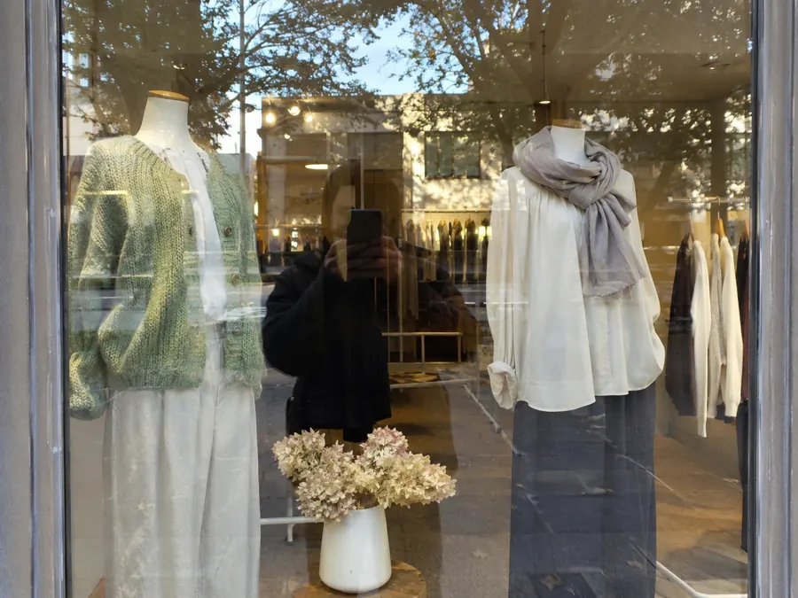
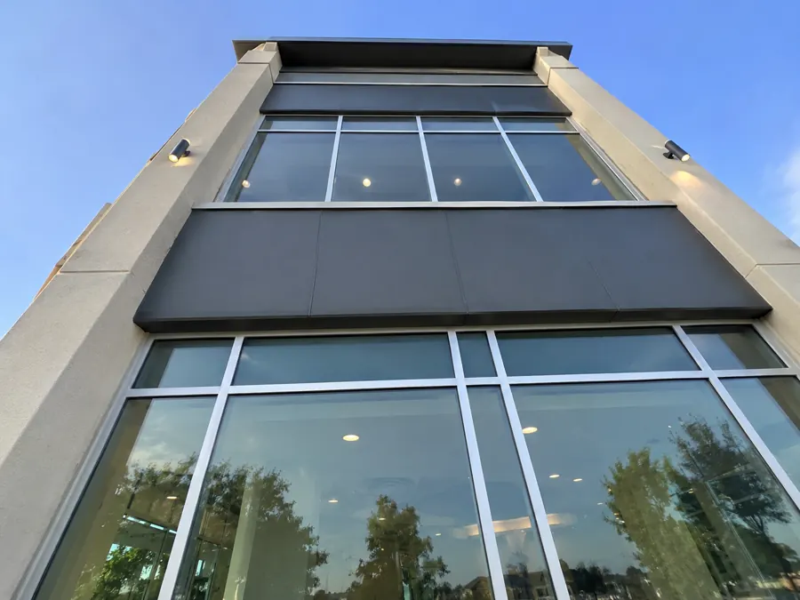
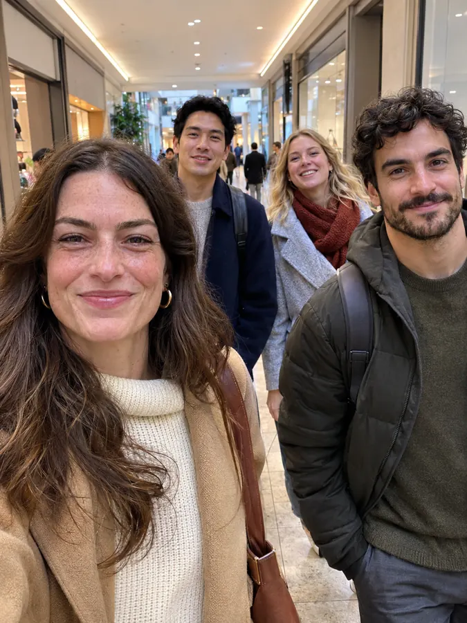
当日の回り方この順に回る。時刻を押すと中身が開きます。撮ったら、その行の □ を押す（下の A〜E にも付きます）
13:30吉田様にごあいさつ・確かめる7つ（10分）
- 撮ってよいお店「今日、中を撮ってよいお店はどこでしょうか」（Leon・VITA は許可済み）。下の「お店」の表の「撮影可」に印
- お店へのひとこと「お店の方へ、撮影に回ることを先にひとこと伝えていただけますか」
- 人の写り方「お客さまと店員さんは写さない、とのことでしたね。通路の奥に、後ろ姿が小さく入るのもやめておいた方がよいでしょうか」→ 答えのとおりにする。「よい」と言われなければ、人がいない瞬間だけ撮る
- 屋上・2階の窓から撮ってよいか（駐車場の広さを撮るため）
- 現在地QRの場所「貼るならどの辺りがよいでしょうか」。決めるのは23日。今日は候補①〜⑪の壁を撮るだけ（番号の図）
- 休憩所の2か所「休憩所は、1階のピーパラダイスの前と、2階のファンタジーランドとパレットの間、の2か所で合っていますか」
- 終わりの時刻「16時までに終わるようにします」とひとこと（お約束は13:30〜16:00）
13:40社長のお写真（15分）
- 下の「社長のお写真」のとおりに。場所を決め、身だしなみをひとこと確認し、ポートレートモードで横・縦10枚ずつ
- 社長のご都合が合わなければ、外を撮り終えた直後（14:20ごろ）に。それも無理なら、23日の打ち合わせの後に（23日の流れの「撮り足し」）
13:55A 建物の外（25分・明るいうちに）
- ★ 正面の全体（横・縦）道の向こうまで下がる。空を上3分の1。入りきらなければ、立つ場所は変えずに体ごと少しずつ回して、横で左端・真ん中・右端の3枚（隣の写真と3分の1ずつ重ねる。あとでつなぎます）
- ★ ななめ45度（横）建物の角まで歩き、角を画面の左3分の1の線に
- ★ 看板（寄り）真ん前に立ち、文字がまっすぐ読めるように。見上げすぎない
- ★ 入口・自動ドア（横・縦）タクシー乗り場のある玄関を、真正面のまん中から。人が通らない瞬間に
- 空と建物だけ（横）正面の場所でスマホを少し上へ。建物は画面の下半分
- バス停・タクシー乗り場（横）同じ玄関のそば。バス停の看板の文字が読めるように
- ★から先に撮る。車道には出ない。後ろ向きに歩きながら下がらない（立ち止まって振り返ってから下がる）。太陽を背中に。逆光で暗い面は15:45に撮り直し
14:201階：★ → 看板 → 館内の残り → 料理・お店（45分）
- ★ 1階の通路（横・縦）まん中に立ち奥まで。人がいない瞬間に
- ★ ポスター用の通路（縦で、場所を少しずつ変えて10枚ほど）ポスター案2のスマホ画面用。人は13:30に確かめた答えのとおりに
- ★ 案内所（横）上の表示が読めるように
- ★ 催事場（横・縦）何もない状態で。催し中なら売り場の方にひとこと
- ★ おみやげの棚（つばき屋など）棚全体を横で3回、目立つ品を寄りで3回
- 全部のお店の看板（通路から・1店20秒・横1回）13:30 に吉田様が「よい」と言えば。ロゴが届いていないお店の代わりになります
- 現在地QRの候補①〜⑦（横で1枚ずつでよい。押す回数の決まりの例外）番号の図の①から番号の順に。壁を3〜4歩下がって（高さが分かるように）。撮るたびに、下の「QRを置く予定の場所」のメモに番号を足す（例：①②③）
- エスカレーター・エレベーター（横）少し斜めから両方入れる
- 休憩所（横）ピーパラダイスの前。まわりのお店も少し入れる
- トイレの入口（横）表示だけ。中は撮らない。人の出入りがない時に、短く
- フロア案内板（寄り）正面から、文字が読めるように
- 季節の飾り（寄り）クリスマスの飾りがあれば
- 料理（麺・たこ焼き など・10分）1階の飲食のお店で「撮ってよい料理はありますか」と聞く。あれば湯気のあるうちに撮る。無ければ注文はせず、次へ（料理は後日に回します）
- 椿の商品（寄り）つばき油・せっけんなど。おみやげの棚と一緒に
- 1階のお店 撮影可のお店のうち2〜3店（1店3分。全部回れなくてよい）。お菓子の棚（文明堂など）を優先。「最初のひとこと」を言ってから、店の前（看板を正面）・店の中（人のいない方向）・商品2〜3個（近づいて少し斜め・画面いっぱい）
- 美容室（横）1階の Leon・VITA（許可済み）。お客さんがいない時に。椅子や道具だけでも
- 携帯ショップの看板（横）ドコモ・楽天モバイルなど。通路から看板だけ
- ★の行から先に撮る（上から順）。店員さん・お客さん・子どもは写さない。ATM・レジの画面も。終わったら「失敗例」の見直し方で2分見る
15:052階：館内（15分）→ お店（15分）
- ★ 2階の通路（横）まん中に立ち奥まで。エスカレーターの手すりが少し入るとよい
- 全部のお店の看板（通路から・1店20秒・横1回）1階と同じく、よいと言われていれば
- 現在地QRの候補⑧〜⑩（横で1枚ずつ）番号の順に壁を撮り、メモに番号を足す
- 休憩所（横）ファンタジーランドとパレットの間。まわりのお店も少し入れる
- エスカレーター・エレベーター（横）2階の側から
- 授乳室・ベビーカー置き場の入口（横）2階の男子トイレの横（授乳室の表示が目印）。表示だけ。人の出入りがない時に、短く
- 駐車場の広さ（横）許可があれば2階の窓から見下ろす。ナンバーが読めない距離
- 2階のお店 撮影可のお店のうち2〜3店（1店3分）。服（パレット・SpRay など）はハンガーの並びを少し引いて横で、めがね（ヨネザワ）は棚を寄りで。おもちゃ（おやこパンダ）は、キャラクターが大きく写らないよう棚全体を少し引いて
- 雨の日の特集（横）ゲームセンター（ファンタジーランド）・リトルシアター。子どもがいない時に。いれば機械だけを寄りで
- 託児所（シティハウス）（横）看板と受付だけ。中と子どもは撮らない
- もみほぐし（恵）（横・時間があれば）お客さんがいない時に、看板か椅子だけ
- 2階は子どもが多い所。シャッターの前に、画面の中に子どもがいないか必ず見る
15:353階（5分）→ 撮り残し（5分）
- 3階・たびのコンパスの前（横）3階の玄関（屋上駐車場への出口）と一緒に
- 現在地QRの候補⑪（横で1枚）3階の玄関。壁を撮り、メモに⑪
- 駐車場の広さ（横）まだなら、許可をいただいて屋上駐車場の端から見下ろす
- メニュー・チラシの現物（時間があれば・寄り）通りがかりに掲示があれば。正面から、文字が読めるように
- 店員さんは写しません（吉田様のご希望）。店内は、店員さんが写らない角度か、いなくなった瞬間に撮る
15:45★の撮りもれ確認・外の撮り直し（10分）
- ★の撮りもれ この「回り方」で ★ の付いた行の □ が押してあるか見る。無ければ先に撮る
- 外をもう1度 逆光だった面があれば、正面と入口だけ撮り直す。レンズをもう1回ふいてから
- ★以外の撮り残しは、ここでは追わない。23日の打ち合わせの後か、後日に撮り足せます
15:55お礼（5分）→ 16:00 終わり
- 吉田様へお礼「本日はありがとうございました。写真は今夜整理して、23日に見本に入れてお見せします」
- 写真の見直しは、帰ってから「失敗例」の見直し方で（★の物だけ大きくして確かめる）
- 写真は LINE で送らない（画質が落ちる）。夜の送り方は、いちばん下の「撮ったあと」
困ったとき押すと答えが開きます
雨が降っている・曇っている
館内（B〜E）を先に撮り、外（A）は最後に。雨のときの外は、入口の屋根の下から入口だけ撮ります。建物の全体は、23日の打ち合わせの後（晴れていれば）か、別の日に撮り直します。雨の写真を無理に撮らなくて大丈夫です。
通路に人が多くて、空かない
30秒ほど待つと、すき間ができます。待っても空かないときは、別の場所を先に撮って、あとで戻ります。後ろ姿が小さく入るのは、13:30に吉田様が「よい」と言った時だけです。
お客さんに「何を撮っているの？」と聞かれた
「モールのホームページ用に、館内の写真を撮っています。お客さまのお顔は写していません」。写りたくないと言われたら、その方が通り過ぎてから撮ります。
お店に断られた
「承知しました、ありがとうございます」で終わりにして、看板だけ通路から撮ります。お店の表の「撮影可」は空けたままにしておけば、あとで分かります。
動画になってしまった・連写になった
シャッターを長く押すと、押している間だけ動画になります（指を離せば止まる）。撮れた物はそのままで大丈夫（あとでこちらで外します）。次から「トン」と押してすぐ離します。
店内が暗い・写真が黄色っぽい
画面の明るくしたい所を押し、太陽の印を上へなぞります。色はあとでこちらで直せるので、気にしなくて大丈夫です。フラッシュは使いません。
電池が減ってきた（20%を切った）
モバイルバッテリーをつないだまま撮ります。画面の明るさを少し下げると長持ちします。
「ストレージがいっぱい」と出た
撮影を止めて、写真アプリの「最近削除した項目」を空にするか、使っていないアプリの大きな動画を消します。今日の写真は消さないでください。
どの写真を撮ったか分からなくなった
撮ったら、その場で下の A〜E の □ を押しておくと残ります（スマホとPCで同じになります）。分からなくなったら、写真アプリで今日の写真を見て、撮れていない物だけ撮ります。多めに撮って困ることはありません。
時間が足りない
★の付いた物だけは必ず撮ります（建物の正面・ななめ・看板・入口／1階と2階の通路・案内所・催事場・ポスター用の通路／おみやげの棚／社長のお写真）。ほかは23日の打ち合わせの後か、後日に撮り足せます。お店は全部回れなくて大丈夫です。
上の丸い印が「同期できず」になった
館内で電波が弱いと出ます。押した □ やメモはスマホの中に残っているので、そのまま続けて大丈夫です。電波のある所で開き直すと、自然に送られます。
撮ってよいか迷う物がある
人の顔・子ども・車のナンバー・レジの画面でなければ、撮っておきます。載せるかどうかは、あとで吉田様と決めます。
社長のお写真会社案内のページ用。13:45 に撮る

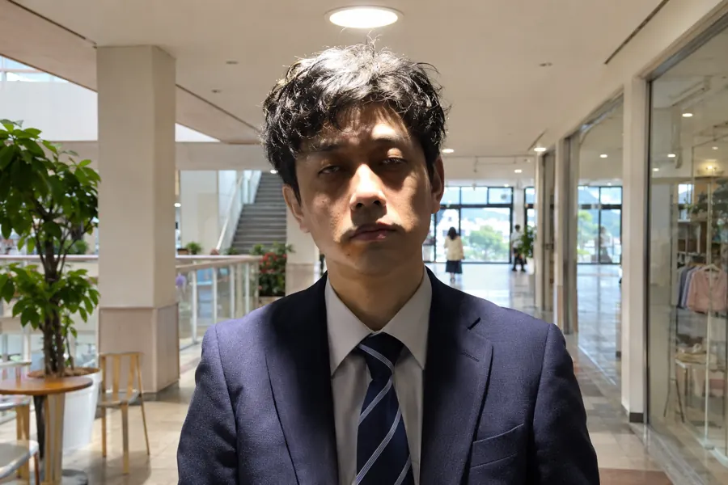
✕ 照明の真下目の下に影ができ、疲れた顔に
 ✕ 下から見上げる
✕ 下から見上げるあごが大きく、天井が写る
見本のポイント
- 顔を明るい方へ：入口や窓の光が顔に当たる向きに立っていただく（窓を背にしない）
- 目の高さで撮る：スマホを社長の目の高さに。目が上の3等分の線あたりに来るように
- 腰から上：体は少し斜め、顔はこちら。手は軽く前で組むか、自然に下ろす
- 背景に看板・お店が少しぼけて入る：社長には、うしろの壁や棚から1mほど離れて立っていただく
ポートレートモードの出し方
- カメラを開き、シャッターの近くに並ぶ文字（写真・ポートレート など）を指で横にずらして「ポートレート」にする
- 社長から2mほど離れて構える。画面に「離れてください」などの文字が出たら1歩下がる
- 画面の社長の顔を軽く押してから、シャッターを「トン」
前の日に「試す2」で一度出しておくと、当日迷いません。見つからなければ、ふつうの「写真」で撮れば十分です。
撮り方
- 場所は入口の中か、館内の明るい通路。人通りが少ない所で
- 表情は2種類：口を閉じた笑顔／少し歯が見える笑顔
- 横・縦それぞれ10枚ほど続けて撮る（まばたき・固い表情は後で外す）
- ネクタイ・襟・髪の乱れを、撮る前にひとこと確認
声かけ
お店撮影可と言われたお店だけ。店の前（看板）・店の中・商品2〜3つ。1店3分まで
最初のひとこと
- 吉田様が隣にいるときは、先に吉田様からひとこと紹介していただくと早い
- 名刺があれば、ひとこと添えて渡す
- 断られたら「承知しました、ありがとうございます」で終わり。看板だけ外から撮る
- 撮り終えたら「ありがとうございました」
- 下の表は、撮れた物に印を付ける（撮影可・店の前・店の中・商品）
23日のあと
打ち合わせで決まったことと、メモへの対応、LINE で送る文面です（11/24 夜にまとめました）。
ひなが堂は Instagram に関与しない。代わりに、テナントの催事などのチラシ・ポスターを、プロの仕上がりで作る箱を用意する（月4回まで）。箱の中の質問で材料を集め、届いた写真は必ず加工してから使う。
メモへの対応上から順に。「要確認」は朝に代表へ
- 見本サイトに反映館内図1階：けんちゃん・コインランドリーを角へGPT の絵を描き直し。3店の並び（ランドリー・ATM・不動産）はそのまま角に寄せた
- 見本サイトに反映VITA の店内写真（23日のメール）3枚を加工して載せた（6枚に）
- 見本サイトに反映ドコモの LINE・Facebook の QR（11/20 に届いていた）お店の詳細に「LINEで友だち追加」「Facebookを開く」（福江店のアカウント）
- 見本サイトに反映スマホのメニューをサイドメニューに右から画面の高さいっぱいに出る形
- 見本サイトに反映1月1日〜3日の営業時間は全館統一お知らせの表に「全館共通」と明記。「今やっている？」の印も 1/1 は 11:00〜19:00、1/2・3 は 10:00〜19:00 で全店を判定
- 見本サイトに反映店の数は35（コインランドリー・ATMは数えない）トップ・お店のページ・海外向けのページの数をすべて35に。お店の欄にはそのまま載せる
- 見本サイトに反映・要確認恵の正しい店名「肩こりほぐし隊 恵」にした。メモの「肩こり、ほぐし隊」の「、」を入れるかは代表に確認
- 見本サイトに反映・要確認BLOSSOM・VITA は不定休定休日の欄を「不定休」にして、営業日はお店の Instagram へ案内。Instagram のアドレスはまだ無いので、下の LINE 6 で聞く
- 見本サイトに反映ドコモはほぼ無人「スタッフがいる日は月に1〜2回ほど。ご用の際は電話へ」と案内
- 見本サイトに反映Wi-Fi は2階の休憩所とリトル・クルサだけ館内の設備の欄を直した
- 見本サイトに反映言葉えらびをサイドメニューへスマホでは、上の帯をやめて、サイドメニューの下に4つの言語を並べた
- 見本サイトに反映トップの外観をもう少し明るく写真の影の部分を明るくし、文字のための暗い幕も薄くした
- HPの見本に反映・受付は契約後チラシは8枠・期日が終わったら自動で消える・1つに表と裏の2枚見本サイトの表示を直した（見本にボンパティの表と裏）。本番のホームページはまだ公開前。お店から受け付ける仕組み（御社の Apps Script に入れる物）も同じ決まりに作り替え、試験127件合格。御社への設定は契約の後
- 作成済・反映は代表の承認待ちInstagram には関与しない → チラシ・ポスターの箱旧「投稿の箱」を「チラシの箱」に作り替えた（月4回・10の質問・税込の総額・片面/両面・案A案B・✓）。試験143件合格。受け側（Apps Script）の反映は本番の操作なので代表の承認後に、画面と一緒に公開
- たたき台・要判断契約書のたたき台Instagram の所をチラシ・ポスター（月4件・1件の定義・写真の加工）に直し、QR を11か所までと書いた。料金と源泉徴収は代表の判断
- 用意したLINE で聞く・伝えること下の文面。押すとコピーできる。送るのは代表
LINE で送る文面3人のグループ（吉田様・植田様）へ。押すとコピー。送るのは代表
吉田様、植田様 先日はお時間をいただき、ありがとうございました。ひなが堂の大久保です。 このグループで、ホームページの確認を進めさせてください。 見本のホームページを、スマホで実際に触ってみてください。 ・ホームページ（見本） https://hinagado.github.io/studio/goto-citymall-demo/ ・館内の現在地QRを読み取った時の画面（見本） https://hinagado.github.io/studio/goto-citymall-demo/shops.html?here=1f-info 気になった所は、このLINEにそのまま書いてください。契約で決めた範囲と回数の中で、順に直してまいります。
23日にお決めいただいたとおり、ひなが堂は Instagram には関わらず、代わりに「チラシ・ポスターの箱」をご用意しました。月4回まで、プロのデザインでお作りします。 見本の画面です（送っても、どこにも届きません）。 https://hinagado.github.io/studio/goto-citymall-post/post.html?demo=1 いただいた写真は、明るさや色、背景、余白を整えて、おいしそう・きれいに見えるように加工してから使います。 ボンパティ様のクリスマスケーキで作った見本（表と裏）も、近いうちにお送りします。
館内の現在地QRは、23日に選んでいただいた次の7か所でお作りします。 ① 1階 入口（ボンパティの左） ③ 1階 エスカレーター ④ 1階 エレベーター ⑥ 1階 入口（麺屋まる福の左） ⑧ 2階 エスカレーター ⑨ 2階 エレベーター ⑪ 3階 南玄関（たびのコンパス） 上限は11か所ですので、あと4か所まで足せます。 この番号で合っていますか。
ホームページが見られた数などの報告は、契約書では月1回、メールでお送りする形にしています。 このまま毎月お送りしてよろしいでしょうか。ご入用の時だけでよろしければ、そのように契約書を直します。
ホームページのお店の欄に、使えるお支払い方法を載せます。 お店ごとに、分かる範囲で教えていただけますか。 ・クレジットカード ・電子マネー（交通系、WAON など） ・QRコード決済（PayPay など） ・免税の手続きができるか 分からないお店は、空けたままにしておきます。
館内のことで、4つ教えてください。 ①ポイントカード・スタンプカードのあるお店 ②宅配で送れるお店 ③両替ができる所（なければ「なし」で大丈夫です） ④BLOSSOM様と hair salon VITA様の Instagram のアドレス（営業日を Instagram でご案内するため） なお、無料Wi-Fiは「2階の休憩所と、リトル・クルサの店内」と載せました。
Googleマップの「五島シティモール」を、どなたが管理しているかの確かめ方です（Google の公式の手順）。 ①御社のGoogleアカウントでログインして、次を開く https://business.google.com/add ②「五島シティモール」を探して選ぶ ③「他のユーザーが管理している可能性があります」と出たら、どなたかが管理しています。社内に心当たりがなければ、その画面から管理の権限をお願いできます。出なければ、そのまま御社で登録の手続きに進めます。 詳しい手順：https://support.google.com/business/answer/4566671?hl=ja 画面の文字は変わることがありますので、分からなければスクリーンショットを送ってください。一緒に進めます。
23日に決まったこと（Instagramには関わらず、チラシ・ポスターの作成を月4件まで担当する）に合わせて、契約書を直しています。 仕上がりましたら、あらためてお送りします。
ドメインの年会費の支払い方法（カード等）は、使う会社（Cloudflare）の受け付ける方法をまだ確かめていないため、文面に入れていません［要確認］。
聞かれそうなことと、答え方
契約書（第13稿）と、これまでのやりとりから作りました。数字は契約書の文と同じです。迷ったら「確かめて、LINEでお返事します」で大丈夫です。